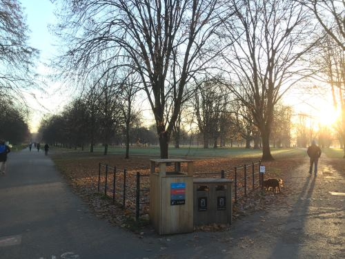
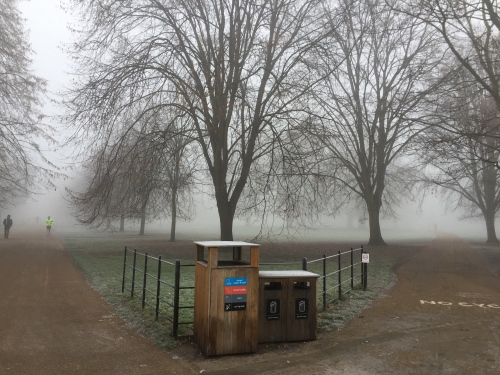
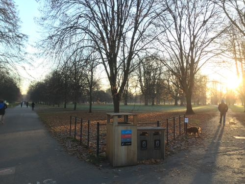
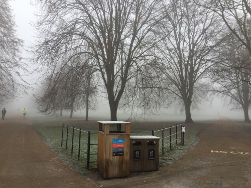
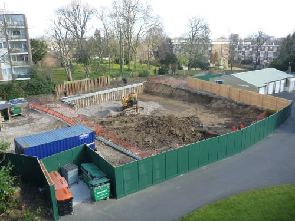
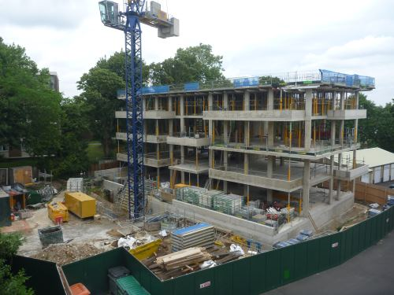
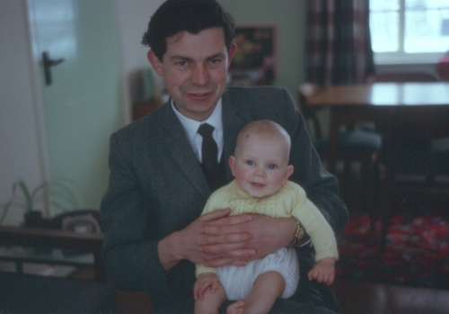
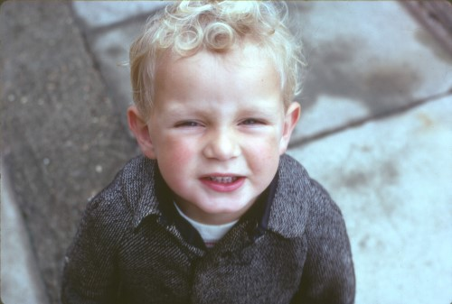
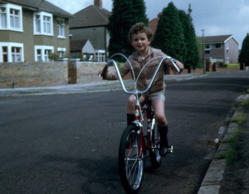

Introduction
How has your appearance changed over the years? What about your children's? Your parents'? Your garden's? What about the last few, very noisy, months of the construction site at the bottom of the road; going from ground breaking to an upmarket apartment block? If you want to visualise such changes, grab the photos and let Zoetic show you.
In fact, if you can find a very old photograph of a local location (perhaps one that even pre-dates cars!), all you need to do is pop out and take a photograph of the same location and then, just with those two photos, Zoetic will produce a video of the scene transitioning from the good old days to as we are today.
What is Zoetic?
Given a series of images, Zoetic creates a video of the images' subject changing over time. The subject would typically be:
- A scene that is fairly static. For example, a landscape where the images depict the changing seasons, or a building construction site that moves from “ground breaking” to the building's completion.
 



Images from the Bins project
 

Images from the Flats project
- Or, an object against differing backgrounds. The object might be a person, with the images showing the person from birth to as they appear today.
  
Images from the Ageing project
What Zoetic is NOT
- An image “morpher” which produces unnatural results or requires a great deal of skill from the user.
- An application that requires carefully controlled scenes with identical camera and lighting conditions from one shot to the next. Indeed, the primary motivation for creating Zoetic was to be able to use any available snap-shots.
Video examples
Instructional and demonstration videos will be continually added to this YouTube channel.
https://www.youtube.com/channel/UC9DS_eg5oE_9HmVVYuUBkNw
Professional version
Functionality that is only available with the Professional version of Zoetic.
- No artificial constraint on image resolution and number of intermediate frames
- Video subtitles can be produced displaying the image dates
- Export and import projects
- Export aligned images. See here for why this might be useful
To be accessible, the following require Simple Mode to be switched off in the Settings.
- Any image can be chosen to be the target image, not just the first
- Sub-projects can be used to split a project for when it is difficult to identify the same alignment points in all images.
- Enhanced image management
- Additional types of videos can be produced. Currently:
- Animate – a video showing the average image being produced from the individual images.
- Throw – a video showing the images ‘thrown’ in various ways. This video does not require marks to be set and hence can be generated immediately on adding images to a project.
How to use Zoetic
- Decide on the subject for the project and gather the required images. (This stage usually takes the most time unless you are very well organised!) Try to find images where the subject is not too small otherwise, after scaling/zooming, the resultant video may have an undesirably poor quality.
- Load the images into Zoetic. The images can be loaded by sharing them from most photo apps, such as Google Photos or Android™ Gallery. Select the required images. (Long pressing an image usually activates multiple selection.) Then activate the photo app’s “share” function and choose Zoetic as the recipient.
- When prompted by Zoetic, create a new project.
- Use the Sort function to arrange the order of the images, delete any unwanted images and add/modify dates. When the video is created, all the images will be aligned to the first image so make sure that image's composition is as required. For example, if the first image's subject is tilted to the left, the entire video will be titled to the left. In Zoetic Pro, rather than always the first image being the target, any image can be chosen to be the target. Zoetic Pro also allows each image in the project to be set to be used or unused when generating videos. This is useful for experimenting and easier than having to delete and then re-add images to the project.
- Use the Mark Points function to select the alignment points in all the images. Zoetic requires the user to specify two points in each image to align the images. These two points must be of the same locations in all the images. Therefore they must be visible (or at least accurately estimable) in all the images. Make sure you don't swap the alignment points between images, otherwise you will find the images with swapped points are inverted. For example, if the top-left corner and the bottom-right corner of a door are being used as the alignment points, make sure the first point is the top-left (or bottom-right) corner and the second point is the bottom-right (or top-left) corner in all the images, otherwise some images will have upside-down doors. For projects that use eyes for the alignment points, the eyes can be automatically detected. Either, from Zoetic’s main menu choose the Detect Eyes function to process all the project’s images, or from the Mark Points function tap the eye icon to detect eyes in the current image. In the former case, you will need to manually confirm that the eyes were correctly detected, especially for images containing more than one face.
- Use the Crop function to specify the area of the image from which to create the video. If the series of images is of a scene photographed in a very consistent fashion (i.e. from exactly the same location and direction), a crop may not be necessary but this is very unlikely to be the case if the images were taken over an extended period. Using the “average” image of the series, select the required area (e.g. the area of the subject’s head). See here for more on cropping.
- Tap Create video. Video creation can take a while; how long will depend upon the resolution of the images, the required number of intermediate steps and the processing power of the device being used. During video creation, the device can be used for other functions since the creation will continue in the background.
- Tap Play video. By default, the video is saved in Android’s Movies folder and hence can be viewed from any app that handles viewing videos, including from within Zoetic. Use the Settings screen to change the folder that is used.

Google Play and the Google Play logo are trademarks of Google LLC.
| Back | Your first project |
|---|